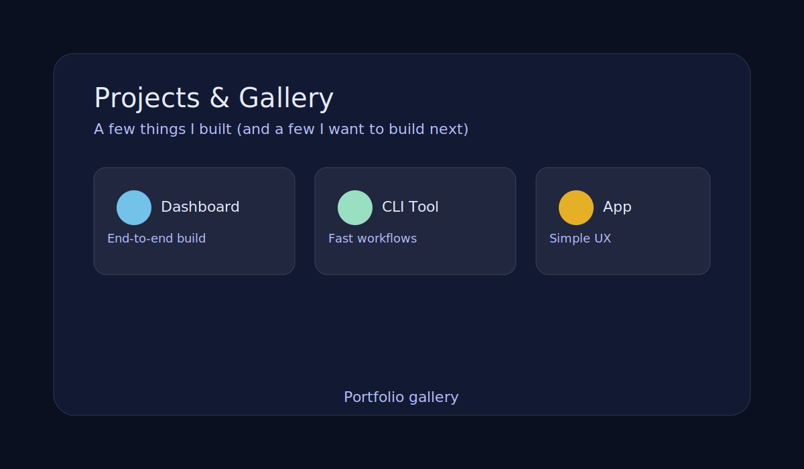
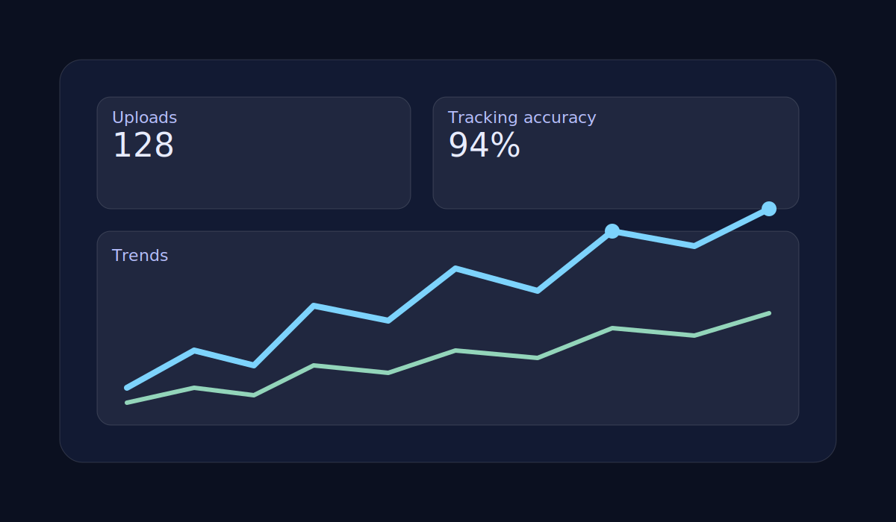
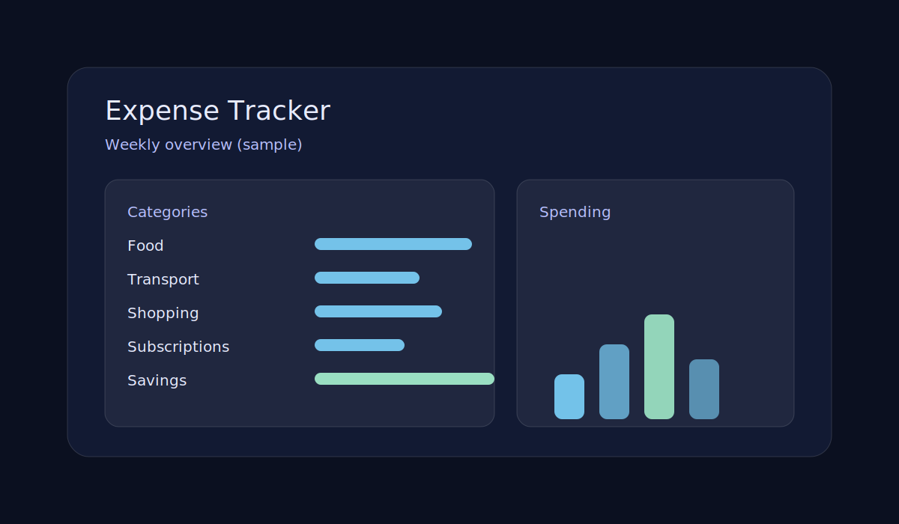

A small gallery of portfolio items with semantic HTML, images, and descriptions.
My projects
I like building tools and dashboards that reduce friction. Some projects are complete, some are evolving,
and some are “next ideas” I want to explore. Each item below is wrapped in an article
with a heading, an image, and a short description.
Gallery overview

A simple visual to introduce the project section.
Project highlights
TailOR Dashboard

Analytics dashboards and data workflows.
An end-to-end analytics dashboard for behavioral video uploads and real-time tracking. It connects the
full flow: upload → processing → results, so it’s easy to review outcomes without hunting for
files.
On the engineering side, I focused on making the pipeline reproducible and observable. I like projects
like this because they combine product thinking with engineering details: data, UI, and reliability.
A command-line workflow tool where the goal is simple: reduce steps between “write code” and “verify
against test cases.” I like CLI tools because they reward careful UX decisions, even without a GUI.
The main idea is fast feedback: run quickly, compare expected output, and iterate. Tools like this help
me stay consistent when practicing problems on platforms like Codeforces, CodeChef, HackerRank, and SPOJ.
A lightweight idea that mixes my hobby with software.
A simple web app idea to track cricket practice: drills, duration, and progress notes. The main goal is
consistency—tiny improvements each week add up over a season.
I’d keep it beginner-friendly: pick one focus (batting, bowling, or fielding), log the session in under
30 seconds, and review a weekly summary. It’s a small product that’s perfect for practicing clean forms
and accessible layout.

A practical project: track spending and learn from the data.
A simple expense tracker app idea focused on clarity: add transactions, categorize them, and review
weekly totals. Projects like this are great practice for building clean forms, tables, and user-friendly
flows.
Features I’d add next: monthly views, category budgets, CSV export, and a lightweight chart so trends are
obvious at a glance. It’s the kind of practical app that teaches good UX fundamentals without being
overwhelming.